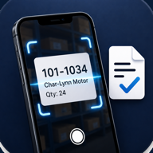

Step 1
Open the stocktake
Choose the row, shelf area, or stocktake you were working in.
Support
Capture bin locations, product labels, quantities, and notes during stock counts, then export the results to Excel.

Need help?
Send a quick note if you need help with setup, scanning, counts, or exports.
Go back to the saved row in the app and tap the product that needs updating. From there you can adjust the quantity and save the updated count.
Step 1
Choose the row, shelf area, or stocktake you were working in.

Step 2
Find the product that needs changing, then tap the row to open the edit screen.

Step 3
Update the quantity, bin location, notes, or product details, then tap Save.
Check iOS Settings, Privacy & Security, Camera, then allow camera access for Stocktake.
Tap Retake, or edit the product code and description before saving.
Tap the quantity number and type the count directly with the keyboard.
Use the export button on a stocktake to create an Excel workbook and share it with Mail, Files, or another app.
When iCloud Documents is available, the app writes a backup to the user’s iCloud Documents folder.
Open the stocktake and edit the title or name at the top.
Tap the saved product row, update the bin location, then save the change.
Manually enter the product code, description, quantity, and notes before saving.
A row can be saved with zero when you need to record that a product location was checked but no stock was present.
Deleted stocktakes go to Recently Deleted first, where they can be restored before permanent removal.
The app creates an Excel file and opens the iOS share sheet so you can send it by Mail, save it to Files, or share it another way.
The email address appears on stocktake exports so the count can be traced back to the person or device that created it.